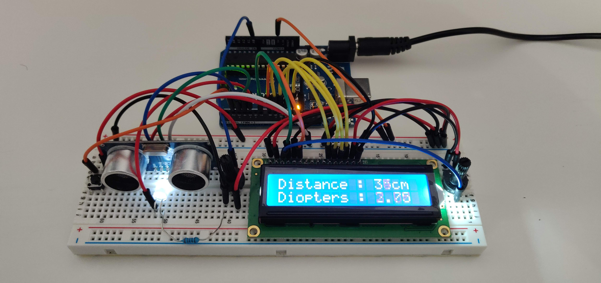
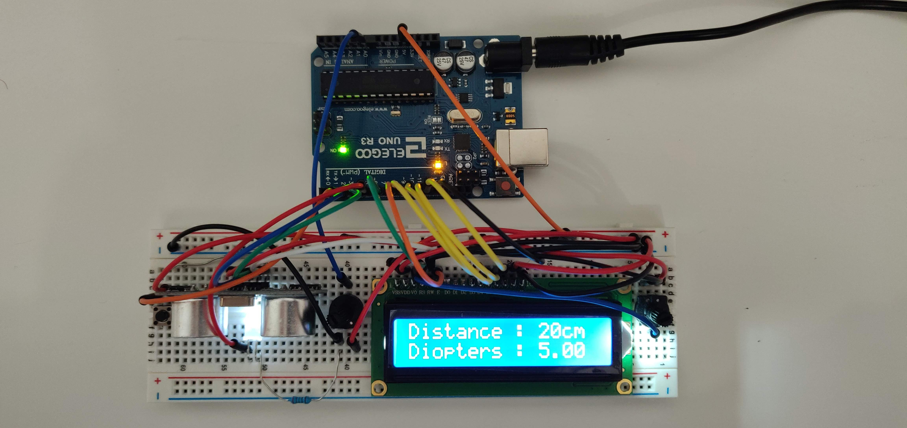
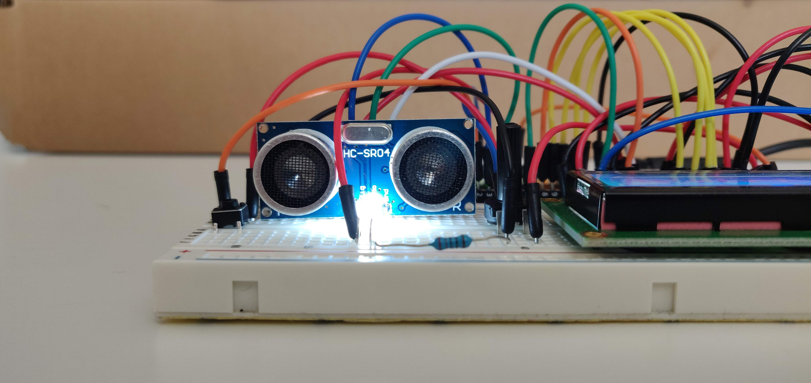
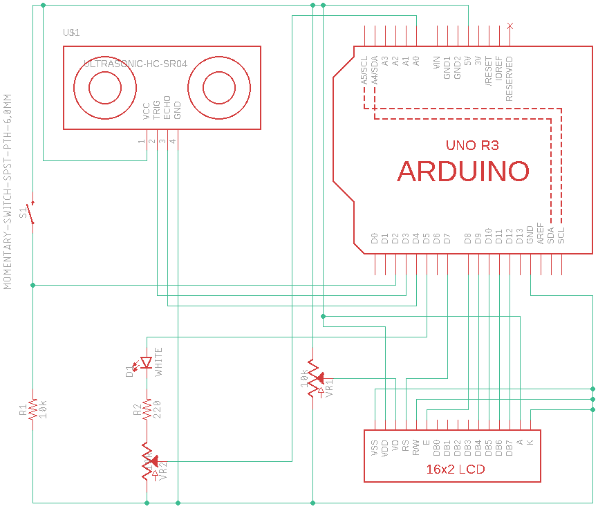

Introduction
I always loved tinkering with electronics - that’s why I did Electronics at A-Level and went on to do Electrical & Electronic Engineering at university. However, over the last few years, due to work, travel, and other life goings-on, I haven’t had a chance to play around.
Recently I saw an Arduino kit on sale on Amazon and decided to jump back in! Especially as I found some software so you can use one as a PLC… Watch this space.
Eyesight
Due to spending way too many hours on the computer as a kid, my eyesight is not great - not terrible, but far from perfect. I’ve slowly been trying to improve my eyesight, or at least stop its decline, using the EndMyopia system. The methodology, in many ways, involves treating your eyes like any other body part/muscle that you want to improve - exercise and rest.
When trying to improving anything (e.g. fat loss), monitoring is vitally important, both for practical and mental purposes. You need to measure where you currently are, and tracking progress towards your goal(s).
Eyesight is measured in diopters. When you go to the opticians, they usually first measure your eyesight using a fancy balloon-wielding machine (autorefractor), and then using actual lenses to test how well you can read some letters or shapes 3 or 6 metres away. The problem with the opticians is it is a point-in-time measurement - eyesight varies on a number of factors, including time-of-day, screen time, general health, alchohol consumption, brightness, and much more. Because of this, different readings in the same day could be dramatically different - for example, 30 minutes after waking up compared with after 10 hours working on the computer. Fortunately, there’s an easy, cheap, at-home method to measure your diopters, without having to spend ££££ on an autorefractor or £££s on a lens kit.
The key is discovering how far you can see before your vision starts getting blurry. In other words, look at some letters on a piece of paper, move it away until it starts to go blurry, then measure the distance with a tape measure or rule. Say, for example, it’s 25cm. Divide -100cm by this value and you get your diopters! So -100/25 = -4, meaning your glasses should be approximately -4.00. Note there’s a slight difference between this measurement and exactly what you’d need for glasses, as there is a distance between your eyes and the lenses of the glasses, but it’s a good approximation. EndMyopia have their own guide, along with a Myopia Calculator.
Note this doesn’t measure astigmatism, eye health, or anything else. It’s a simple diopter measuring method.
The Project
My project, then, was straight-forward. Measure the distance between my eyes and the thing I’m looking at - effectively, a tape measure, without the tape.
The kit I bought included an ultrasound device, which does 2~400cm with +-3mm accuracy. This seemed like a reasonable (and the only) option. Even better, the device board has the device name written on it (HC-SR04), so I can use this to focus on while the sensors are pointing directly at my face!
I also added an LCD screen, to display the results (the centimetre measurement, and converted to diopters), a adjustable-brightness LED for measuring in dark rooms (so I can read HC-SR04), and a button to actually do the measurement (i.e. temporarily freeze the screen so I can read it when I stop looking at the sensor).
The right-most potentiometer is required to adjust the LCD contrast.
Images
So, without further ado, here is my little invention:

Note the numbers are in the middle of changing, hence the strange blur.

View from the top, to get a better idea of wiring.

View from the front, as if you were using it (move away until HC-SR04 is sliiiightly blurry).
Circuit Diagram
Made with Autodesk EAGLE.

Code
How it actually works. The code is a combination of code borrowed from various sources and my own additions to make it work as I’d like. No need to reinvent the wheel.
// include the library code:
#include "LiquidCrystal.h"
#include "SR04.h"
// physical pins
const int buttonPin = 2;
const int trigPin = 3;
const int echoPin = 4;
const int ledPin = 5;
const int potPin = A0;
// loop counter
unsigned int count = 0;
// debouncing variables
unsigned int state = HIGH; // the current state of the potValue pin
unsigned int buttonState; // the current reading from the input pin
unsigned int lastButtonState = LOW; // the previous reading from the input pin
unsigned long lastDebounceTime = 0; // the last time the potValue pin was toggled
unsigned long debounceDelay = 50; // the debounce time; increase if the potValue flickers
// LED variables
unsigned int potValue;
unsigned int ledValue;
// distance variables
SR04 sr04 = SR04(echoPin, trigPin);
unsigned int cm;
// initialize the library with the numbers of the interface pins
LiquidCrystal lcd(7, 8, 9, 10, 11, 12);
void setup() {
// initialise pins
pinMode(buttonPin, INPUT);
pinMode(ledPin, potValue);
// initialise screen
lcd.begin(16, 2);
lcd.print("Distance : ");
lcd.setCursor(0, 1); // column 0, line 1
lcd.print("Diopters : ");
}
void loop() {
// debounce
unsigned int reading = digitalRead(buttonPin);
if (reading != lastButtonState) {
lastDebounceTime = millis();
}
if ((millis() - lastDebounceTime) > debounceDelay) {
if (reading != buttonState) {
buttonState = reading;
if (buttonState == HIGH) {
state = !state;
}
}
}
lastButtonState = reading;
// distance measuring and diopter calculation
cm = sr04.Distance();
if (state == HIGH) {
if (count > 2) { // slow down the screen update slightly
lcd.setCursor(11, 0); // so as not to overwrite "Distance: "
if (cm > 400) { // sensor cannot read this high, so if it does it's an error
lcd.print("! "); // extra spaces to overwrite any existing characters
lcd.setCursor(11, 1); // so as not to overwrite "Diopters: "
lcd.print("! ");
} else {
lcd.print(cm);
lcd.print("cm ");
if (cm < 100) {
float d = float(100) / float(cm); // calculate diopters
d *= 4; // round to nearest 0.25, which is how diopters are measured
d = round(d);
d /= 4;
lcd.setCursor(11, 1);
lcd.print(d);
lcd.print(" ");
}
}
count = 0;
}
count += 1;
}
// LED adjustment
potValue = analogRead(potPin);
ledValue = map(potValue, 0, 1023, 0, 255); // standard for analogRead
analogWrite(ledPin, ledValue);
}
Video
The box of tea is a placeholder for my head:
Conclusion
It’s not perfect. The distance is not 100% accurate, and sometimes it jumps around a bit so you need to remeasure. You can’t be certain the ultrasound is always bouncing off your eyeball, or even the same area of your face between measurements. And, being Arduino/breadboard-based, it’s large and powered by mains electricity.
However, this isn’t a medical device; it’s a fun personal device primarily for monitoring change. If it consistently measures 22~24cm for a few days (~-4.25), but a few months later it measures 26~28 (~-3.75), it’s almost certain your eyesight has improved! And therefore it fulfills the basic requirements of the project - to track the change (improvement!) in my eyesight.
If I was to make any improvements, I would add an additional sensor (perhaps IR) to better measure the distance. If I was to make it into a proper product, I would of course reduce the size and have it battery-powered, but also have the screen facing the user (i.e. be in the same direction as the ultrasound sensors). It would also be good to add a memory function.
But apart from that, I’m very happy with my first Arduino project in almost a decade!
Comments?
Feel free to comment on my LinkedIn post